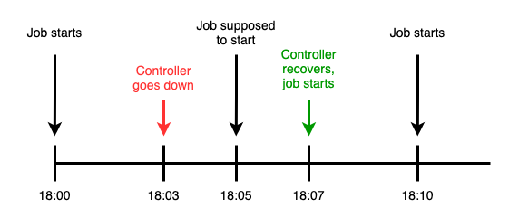

Scheduling
A JobConfig can be set to automatically create Jobs based on a cron schedule.
Sample Configuration
apiVersion: execution.furiko.io/v1alpha1
kind: JobConfig
spec:
schedule:
cron:
expression: 0 10 * * *
timezone: America/New_York
disabled: false
Configuration Options
cron
cron.expression
Defines a cron expression that defines when the JobConfig should be run.
Furiko uses an extended cron syntax that supports between 5 to 7 tokens, supporting up to second-level granularity of cron expressions. Additionally, Furiko's cron syntax also supports H tokens for load balancing.
For more details and examples, see Cron Syntax.
cron.timezone
Defines an optional value that defines the timezone that cron.expression should be interpreted in.
For example, a cron schedule of 0 10 * * * with a timezone of Asia/Singapore will be interpreted as running at 02:00:00 UTC every day.
timezone must be one of the following values:
- A valid
tzstring (e.g.Asia/Singapore,America/New_York) in the Time Zone Database. - A UTC offset with minutes (e.g.
UTC-10:00). - A GMT offset with minutes (e.g.
GMT+05:30). The meaning is the same as its UTC counterpart.
If not specified, defaults to the controller's global default configuration value (via defaultTimezone), which defaults to UTC.
Info
This field merely is used for parsing cron.expression, and has nothing to do with /etc/timezone inside the container (i.e. it will not set $TZ automatically).
disabled
Automatic scheduling can also be disabled or suspended, by specifying disabled: true.
constraints
Specify any constraints that should apply to the schedule.
schedule.notBefore
If specified, automatic scheduling will not take place before this timestamp. Useful to specify a JobConfig that should only start scheduling only after a certain date in the future.
schedule.notAfter
If specified, automatic scheduling will not take place after this timestamp. Useful to specify a JobConfig that should stop scheduling after a certain date in the future.
Handling Concurrent Jobs
Jobs may not be scheduled immediately (or forbidden entirely) based on the concurrency policy if there are concurrent executions of Jobs belonging to this JobConfig.
For more details, see Concurrency.
Once-off Scheduling
A JobConfig can also be scheduled to run once-off in the future by creating a Job with a startPolicy.
See Adhoc Execution and Start Policy for more details.
Back-scheduling
The CronController supports "back-scheduling" Jobs to be created even after its schedule has passed but the controller had detected that it had failed to create one at that point in time.
Given a JobConfig with a cron.expression of */5 * * * *, the following diagram illustrates an example of what it looks like:

This effectively allows the controller to survive short periods of downtime with little repercussions. In practice, most jobs are able to tolerate a few minutes of delay, and it would be more costly to skip the job when it should have been scheduled.
Tip
This feature allows the administrator to safely upgrade Furiko at any time, without having to find a time to restart the process that would cause minimal disruption.
Global Configuration
The back-scheduling thresholds can be further tuned according to you or your organization's requirements.
maxDowntimeThresholdSeconds: Defines the maximum downtime beyond which back-scheduling will not take place.maxMissedSchedules: Defines the maximum number of missed schedules per JobConfig that the controller will attempt to back-schedule.
For more information, refer to the Execution Dynamic Configuration reference.